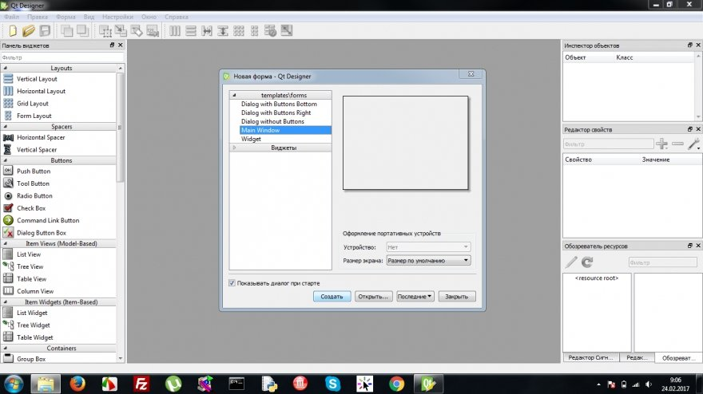
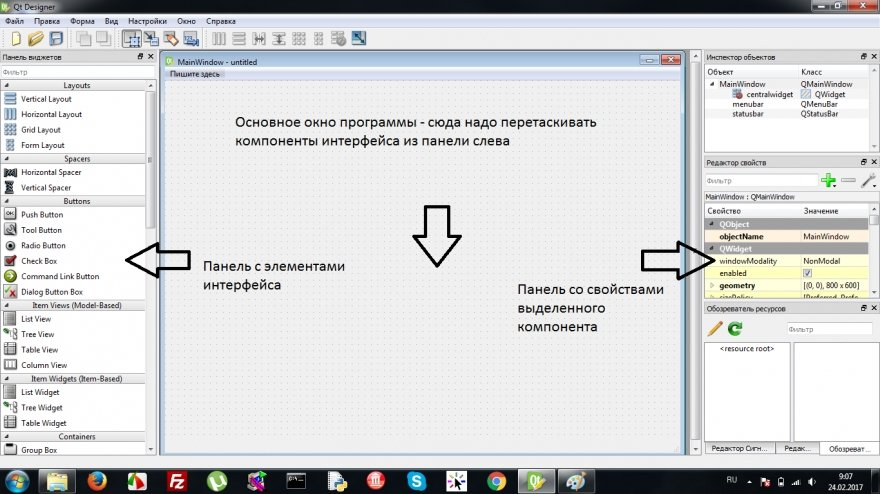
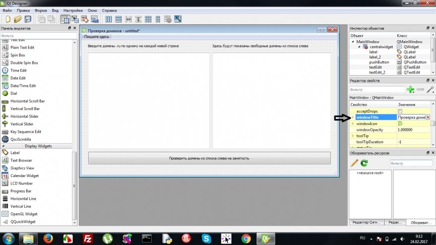
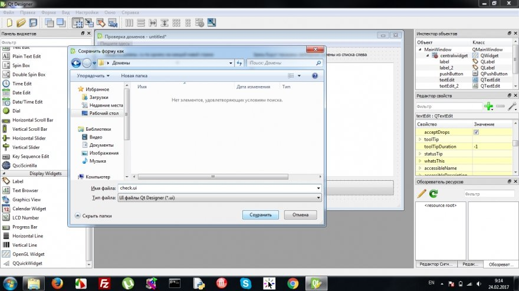
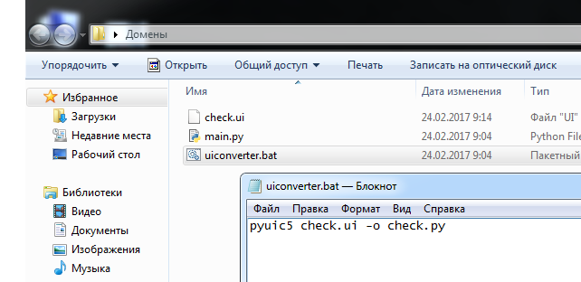
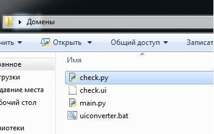
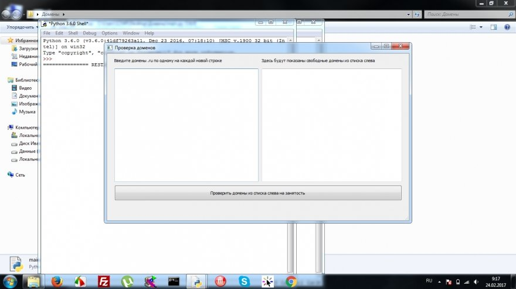
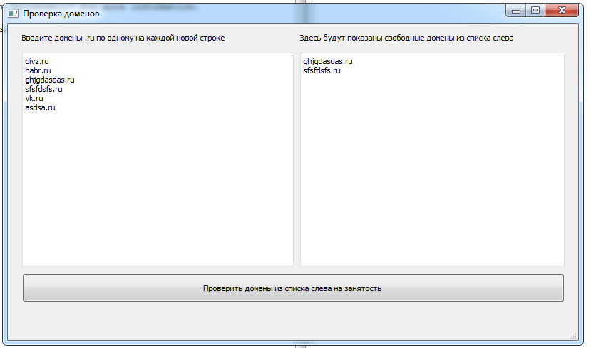

Как написать программу на PyQT
PyQT - это набор библиотек, позволяющий писать оконные приложения под windows и linux на Python. Чтобы начать писать программы на PyQT вам нужно сперва установить PyQT.Для установки в Python 3.6 достаточно в командной строке дать командуpip3 install pyqt5После установки PyQT в Windows в меню Пуск появится папка с его утилитами. Нам интересна утилита Designer которая позволяет создавать элементы оконного интерфейса с помощью простого перетаскивания их на форму приложения.
Писать мы будем программу для проверки доменов на занятость. Мы уже писали такую программу в консольном варианте вот в этой статье. Пришло время написать такую же программу с оконным интерфейсом.Установим модуль для проверки доменовpip3 install python-whoisОткроем из меню Пуск Designer и увидим такое окно
Ничего не меняя в настройках просто нажмем кнопку Создать - тем самым создадим главное окно нашей программы.
Слева есть список компонентов которые мы можем добавлять на форму простым перетаскиванием. У каждого добавленного на форму компонента есть свойства которые отображаются в списке справа, если добавить компонент на форму и выделить его.Накидаем интерфейс нашей программы для проверки доменов - в ней будут два многострочных текстовых поля (элемент TextEdit), две поясняющие надписи (Label) и одна кнопка (PushButton). Слева у нас должнен быть компонент с именем textEdit а справа textEdit_2.
Выделив главное окно поменяем ему заголовок в меню свойств справа - свойство WindowTitle.Изменим надписи на кнопках и Label просто щелкнув двойным щелчком по ним и вписав текст. Изменим размеры компонентов так как нам нужно. Сохраним файл как check.ui в папку с нашим будущим проектом
Теперь нам нужно конвертировать файл в модуль Python. Для этого в Windows в папке с проектом создаем .bat файл в котором пишем следующую строку

После запуска данного .bat файла в папке с проектом появляется файл check.py который является готовым модулем Python. 
Подключив данный модуль к любой нашей программе мы получим оконный интерфейс с теми элементами которые мы заранее туда добавили.Теперь нам нужно создать основную программу - для этого используем вот такой шаблон
import sys
# Импортируем наш интерфейс
from check import *
from PyQt5 import QtCore, QtGui, QtWidgets
class MyWin(QtWidgets.QMainWindow):
def __init__(self, parent=None):
QtWidgets.QWidget.__init__(self, parent)
self.ui = Ui_MainWindow()
self.ui.setupUi(self)
# Здесь прописываем событие нажатия на кнопку
self.ui.pushButton.clicked.connect(self.DomainCheck)
# Пока пустая функция которая выполняется
# при нажатии на кнопку
def DomainCheck(self):
pass
if __name__=="__main__":
app = QtWidgets.QApplication(sys.argv)
myapp = MyWin()
myapp.show()
sys.exit(app.exec_())
Сохраним файл программы в папке с проектом и запустив увидим наше окно.
Пока еще ничего не работает так как функция которая срабатывает при нажатии кнопки у нас пустая (с заглушкой pass - это команда которая ничего не делает и служит для временной замены того что будет там вскоре)Напишем же нашу функцию, которая будет брать список доменов из левого текстового поля, проверять свободны ли они, и добавлять список свободных доменов в правом поле нашего окна.
import sys
from check import *
from PyQt5 import QtCore, QtGui, QtWidgets
# Импортируем модули нужные для проверки доменов
import whois
import re
class MyWin(QtWidgets.QMainWindow):
def __init__(self, parent=None):
QtWidgets.QWidget.__init__(self, parent)
self.ui = Ui_MainWindow()
self.ui.setupUi(self)
# Этой строчкой мы вешаем на кнопку нашу новую функцию
# под названием DomainCheck
self.ui.pushButton.clicked.connect(self.DomainCheck)
# Собственно описываем функцию DomainCheck
# которая вызывается при нажатии кнопки
def DomainCheck(self):
# Очищаем текстовое поле с результатами
self.ui.textEdit_2.setText("")
# В переменную stroki получаем текст из левого поля ввода
stroki=self.ui.textEdit.toPlainText()
# Получаем массив строк разделив текст по знаку переноса строки
mas=stroki.split('\n')
# Обнуляем переменную где будут копиться свободные домены
rezultat='';
# Выводим надпись чтобы пользователь подождал
self.ui.textEdit_2.setText("Пожалуйста ждите, идет проверка!")
# Перебираем массив строчек с названиями доменов
for stroka in mas:
# В переменную domain кладем очищенное от лишних символов имя домена
domain = re.sub("^\s+|\n|\r|\s+$", '', stroka)
# Проверяем свободно ли данное доменное имя
m = whois.whois(domain)
# Если свободно то добавляем его в rezultat
if(m.status==None):
rezultat=rezultat+domain+'\n'
# Выводим в правое поле переменную rezultat со списком свободных доменов
self.ui.textEdit_2.setText(rezultat)
if __name__=="__main__":
app = QtWidgets.QApplication(sys.argv)
myapp = MyWin()
myapp.show()
sys.exit(app.exec_())
Прочитав комментарии в коде вы поймете каждую команду.Скачать исходники
Протестируем данную программу:
Если у вас есть Android телефон, вы можете скачать наш учебник по Python